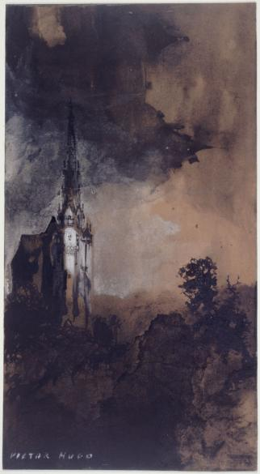

Scopri di più sull'opera
Esplora la Maison de Victor Hugo a Parigi e GuerneseyVisita anche
Esplora il Musée Victor HugoAccedi ai formati XML TEI/DC
File TEI File DCAltri formati
File MODSLe Burg au clair de lune

Scopri di più sull'opera
Esplora la Maison de Victor Hugo a Parigi e GuerneseyVisita anche
Esplora il Musée Victor HugoAccedi ai formati XML TEI/DC
File TEI File DCAltri formati
File MODS